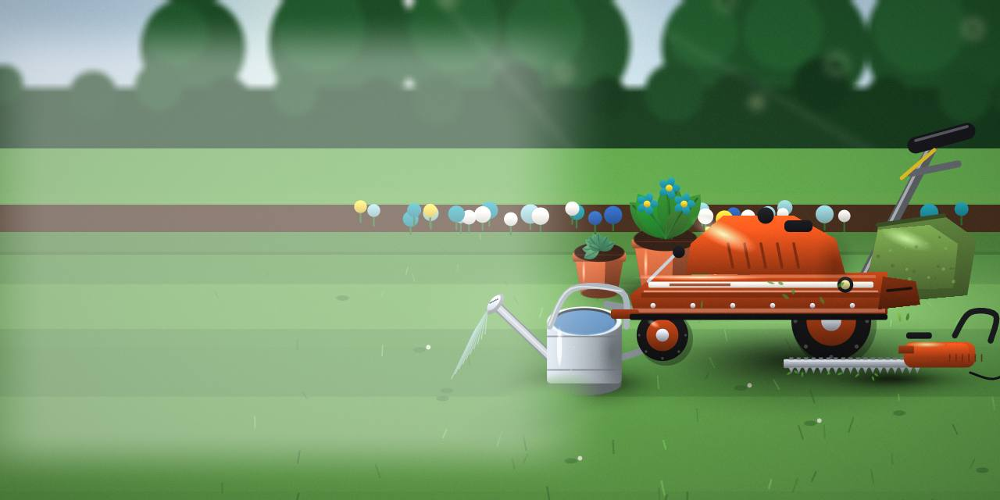
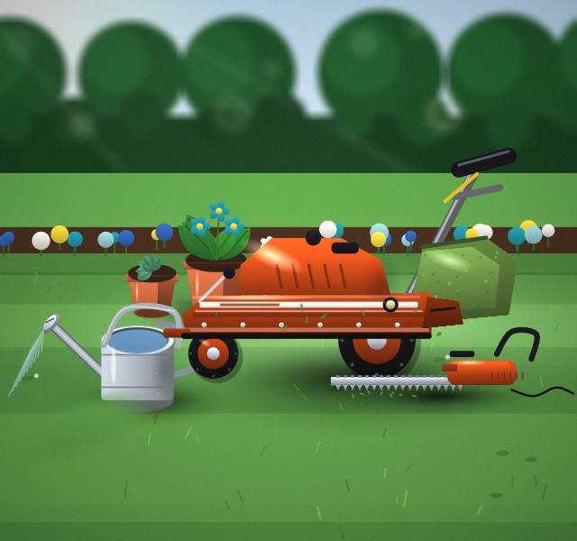
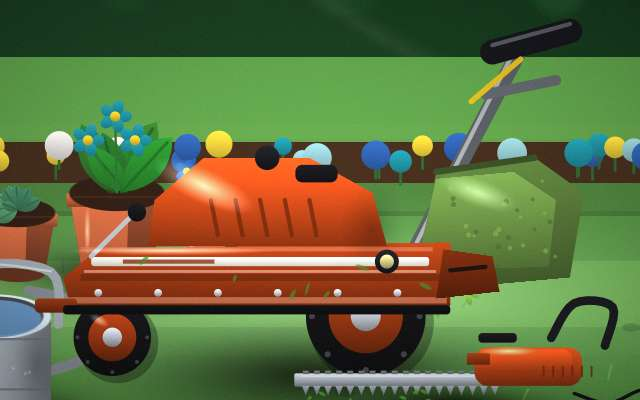
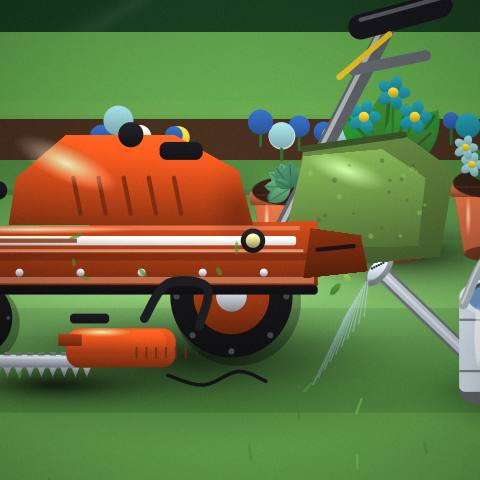
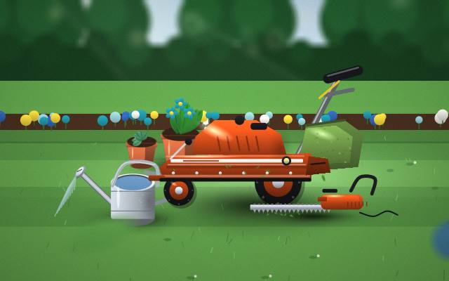
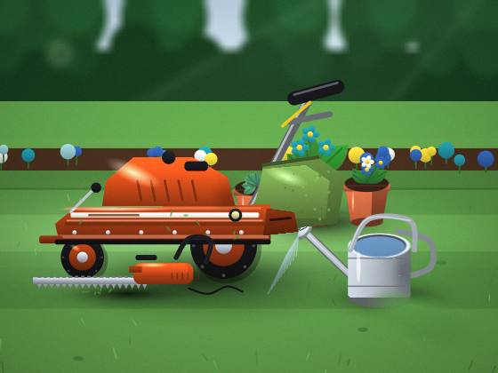

Lawns
Lawns: ask for details before you make up your mind.

Garden & Lawn Care · Bangalore
Let us know what matters most to you.

On the list: gardens and lawns. We look after them in Bangalore. Ask if anything is unclear.
You will find us in Bangalore. Let us know about pets or children so we can plan.
Lawns: ask for details before you make up your mind.
Let us know about the gardens job and we will explain what's involved.
Let us know what you need from Installations and we will suggest where to start.
Maintenance Plans: a clear plan first, then the work, then a check with you.
Not sure what Plants needs? Describe it and we'll advise.




Send a message or call and tell us what you need.
We explain lawns or gardens and what's involved.
We begin when you're ready.
Quotes, timing and what's included.
A short list that saves a second message.
The first steps, without the jargon.
Let us know your area and we'll confirm.
We're in Bangalore; reach out.
Let us know what lawns involves for you and we'll advise.
Message us and we'll tell you how payment works.
Ask for a quote today.
Get a quote